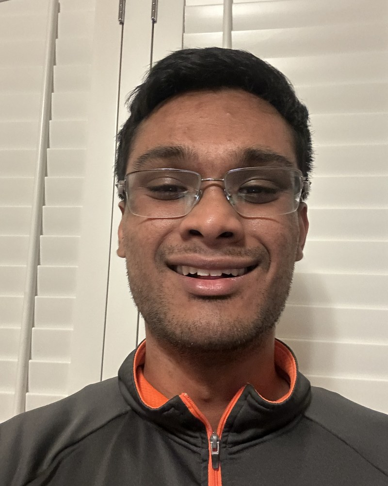

Software Engineer · AI/ML · Backend · Robotics
Diwakar Basak
I build reliable software that connects intelligent models, complex data, and real-world systems.
M.S. Computer Science candidate at UC San Diego, graduating December 2026. Previously a software engineering intern at Highway9 Networks and a robotics research assistant at UIUC.

01
About me
I enjoy things that reward curiosity, patience, and steady improvement—inside and outside engineering.
I like playing pool, and I’m a confident piano player—two very different ways I reset and focus. I’m still a little nervous around dogs and cats, so winning me over may take some patience.
Despite living in San Diego, I somehow haven’t made it to the beach yet. It is officially on the plan.
02
Experience
Software Engineering Intern
Highway9 Networks
Built a Flutter, Flask, and GKE telemetry pipeline processing up to 10,000 events per second. Added Prometheus monitoring, Grafana dashboards, and automated alerts for sub-five-second operational visibility, then integrated an LLM-powered natural-language-to-SQL interface that reduced measured query-authoring time by 87%.
Undergraduate Research Assistant
Robotics Pavilion Lab · UIUC
Improved a camera-based localization system for a haptic wayfinding prototype, reducing positional error by 27%. Built reusable ROS nodes and Gazebo simulation workflows that cut physical-hardware debugging time by 40%.
03
Selected projects
AI systems2026
NanoGPT Language Model
Trained a 99M-parameter language model across multiple GPUs and 10B tokens. Controlled experiments with model architecture and optimization reached 19.78 validation perplexity, beating the 30.85 course baseline.
- PyTorch
- Transformers
- Distributed training
Data infrastructure2026
Adaptive Query Planner
Built a Python planner that routes questions across SQL, graph, vector, full-text, XML, and direct-answer systems. Added read-only execution, source tracking, validation, and automatic fallback.
- PostgreSQL
- Neo4j
- FAISS
Robotics2026
LiDAR SLAM
Combined wheel encoders, IMU data, and LiDAR scan matching to estimate robot pose and build occupancy-grid maps. Used pose-graph optimization and loop closure to reduce accumulated trajectory drift.
- Python
- GTSAM
- Open3D
AI application2026
Interview Tracker
Created an interview analytics dashboard that routes natural-language requests across lookup, analysis, and visualization workflows while restricting models to approved, read-only operations.
- FastAPI
- LangGraph
- PostgreSQL
04
Education
University of California San Diego
M.S. Computer Science · Expected Dec 2026
University of Illinois Urbana-Champaign
B.S. Computer Science · May 2025
05
Core toolkit
Languages Python, Java, C++, SQL, JavaScript, Go, Rust
AI/ML PyTorch, Transformers, Hugging Face, FAISS, RAG
Systems Flask, FastAPI, PostgreSQL, Kafka, Docker, Kubernetes, GCP
Robotics ROS, Gazebo, OpenCV, LiDAR, sensor fusion, GTSAM
Let’s connect